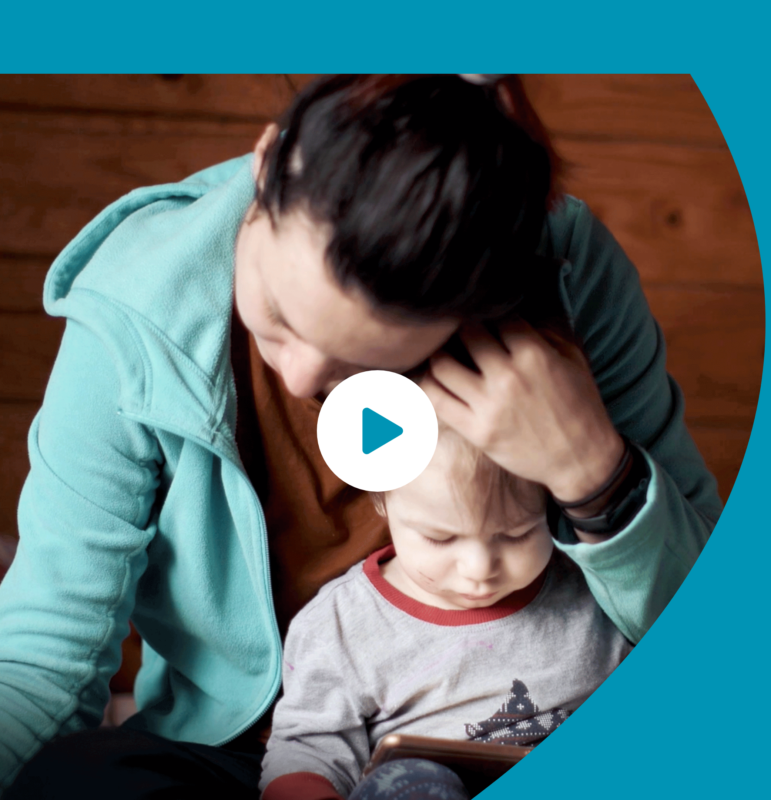

Leurs premières années
Découvrir la vidéo de la
Villa Vauvenargues
Villa Vauvenargues
À Paris, des milliers d’enfants sont fragilisés par la maladie, la précarité et le
handicap.
Leurs premières années
de vie sont déterminantes.
Faites un don
pour agir à temps.
50 €
100 €
200 €
Autre montant : €
Soit 34 € après réduction fiscale
Découvrir la vidéo de la Villa Vauvenargues
Durant les trois premières années d’un enfant, un manque de suivi adapté peut
avoir des conséquences irréversibles.
avoir des conséquences irréversibles.
Leurs premières années de vie sont déterminantes.
Faites un don pour agir à temps
JE FAIS UN DON
Faites un don pour agir à temps
JE FAIS UN DON
Pour préserver l’anonymat des témoins, nous avons modifié leur prénom et leur
photo.
0%
En faisant un don avant le 31 décembre
vous bénéficierez d’une réduction fiscale de 66%
du montant de votre don sur votre impôt
sur le revenu 2021
vous bénéficierez d’une réduction fiscale de 66%
du montant de votre don sur votre impôt
sur le revenu 2021
(dans la limite de 20 % de votre revenu imposable).
Avec un don de 120 €
(soit 41 € après réduction fiscale),
vous protégez un enfant et apportez
un soutien à la parentalité à sa famille.
JE FAIS UN DON
(soit 41 € après réduction fiscale),
vous protégez un enfant et apportez
un soutien à la parentalité à sa famille.
Dans un espace accueillant, moderne et chaleureux, la Villa Vauvenargues est un lieu ressource
qui réunit, sous le même toit, tous les soutiens dont les enfants et familles en situation de vulnérabilité ont
besoin :